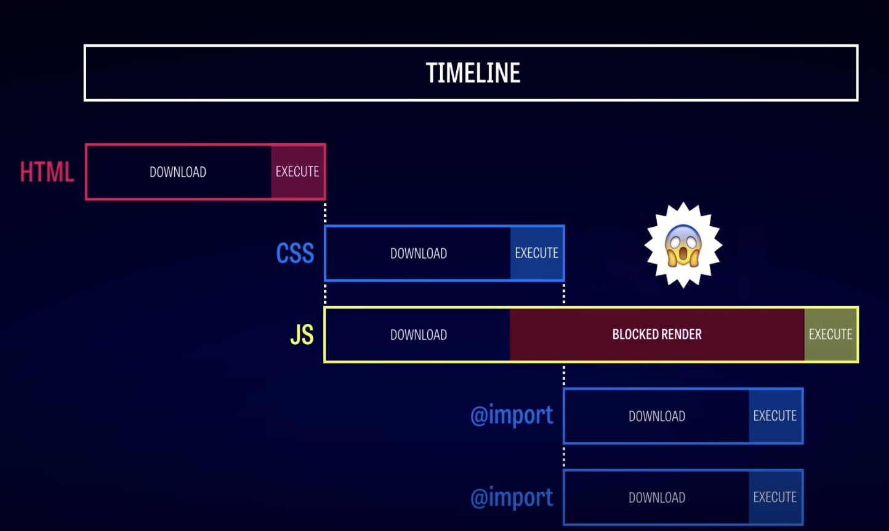
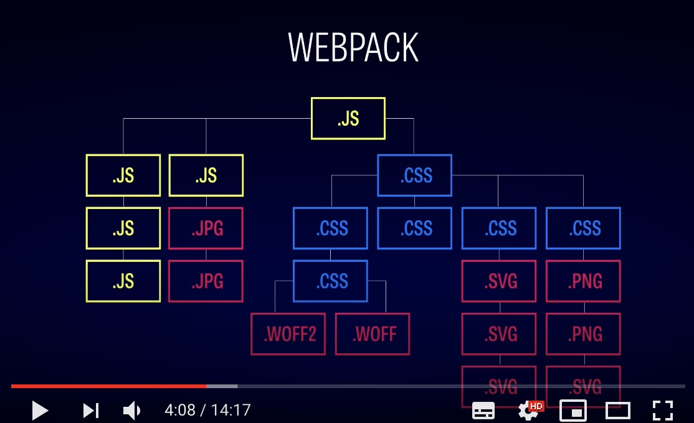

Today I first heard about Webpack. Writing something like import ../assets/images/dog,png in a JavaScript file is unheard of before, and it’s good to know that with Webpack I can actually import these static resources in this way,
At its core, webpack is a static module bundler for modern JavaScript applications. When webpack processes your application, it internally builds a dependency graph which maps every module your project needs and generates one or more bundles. – Webpack Core Concepts
See also this article about why we need modularization in frontend development.
Next.js uses a preconfigured webpack under the hood that you don’t need to mess with. You can also extend the usage of webpack by defining a function that extends webpack config inside next.config.js. See the Next.js Custom Webpack Config here.
Today I’ll just follow the webpack documentation to have a overview of webpack core concepts.
Core Concepts
Entry
Entry point is the module that webpack starts building its internal dependency graph.
Output
Output is where webpack will save the generated bundles.
Loaders
Out of the box, webpack only understands JavaScript and JSON files.
Loaders allow webpack to process other types of files and convert them into valid modules that can be consumed by your application and added to the dependency graph.
At a high level, loaders have two properties in your webpack configuration:
The test property identifies which file or files should be transformed.
The use property indicates which loader should be used to do the transforming.
1 | /* webpack.config.js */ |
The configuration above has defined a rules property for a single module with two required properties: test and use. This tells webpack’s compiler the following:
“Hey webpack compiler, when you come across a path that resolves to a ‘.txt’ file inside of a require()/import statement, use the raw-loader to transform it before you add it to the bundle.”
Plugins
Plugins can be leveraged to perform a wider range of tasks like bundle optimization, asset management and injection of environment variables.
In order to use a plugin, you need to require() it and add it to the plugins array. Most plugins are customizable through options. Since you can use a plugin multiple times in a configuration for different purposes, you need to create an instance of it by calling it with the new operator.
Mode
By setting the mode parameter to either development, production or none, you can enable webpack’s built-in optimizations that correspond to each environment. The default value is production.
Browser Compatibility
webpack supports all browsers that are ES5-compliant (IE8 and below are not supported). webpack needs Promise for import() and require.ensure(). If you want to support older browsers, you will need to load a polyfill before using these expressions.
Environment
webpack runs on Node.js version 8.x and higher.
An “ahead of time compiler” for the browser
A video tutorial by front end center presented the network timeline without using webpack:
As can be seen, the HTML is the entry point when we browse to the webpage.
The dependency from the html page to asset css/js files and then to @import resources can be compounding on big projects.
Webpack follows a graph of dependencies regardless of their file type and tries to build a complete picture:
Moving assets to webpack
The author then demonstrated how he moved the assets to webpack.
Step 1: Installing Webpack
1 | npm install --save-dev webpack |
Then add an npm script to package.json
1 | "scripts": { |
Create webpack.config.js
1 | module.exports = { |
If we fire up npm run build, now webpack builds up your bundle.js.
What we will be doing is move the dependencies that browser needs to deal with, to dependencies that webpack take care of
Step 2: Improve performance
CSS is synchronised, which means we only start loading the resources that CSS refers to after it’s fully loaded.
By moving the resource dependency into your bundle.js, you allow these resources to load early on.
So these are for today of me getting to know the basic idea of webpack.
Next Step
- Follow this video to try out how webpack functions.
- The Network inspection tool looks handy to use when concerned about performances and what requests are being made.